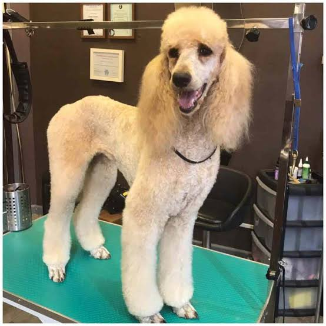
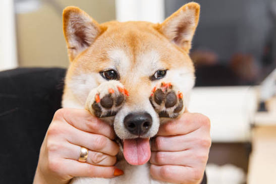
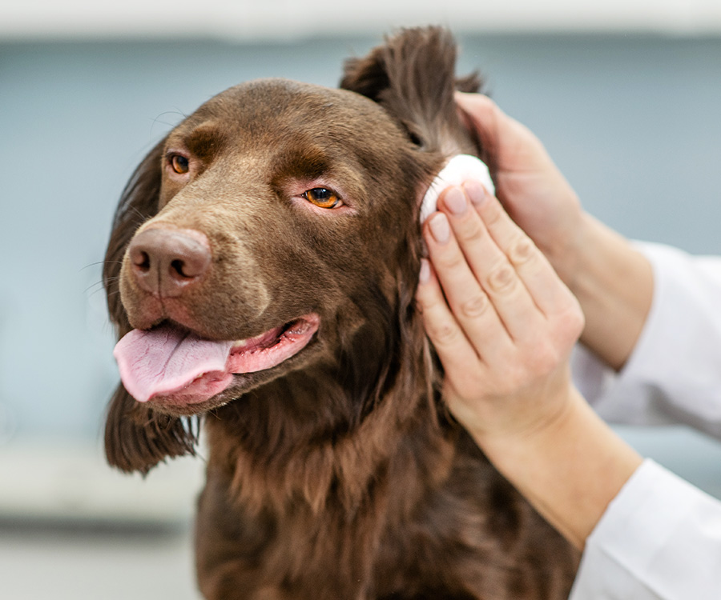
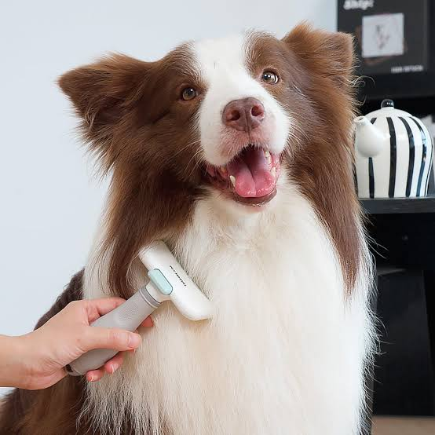
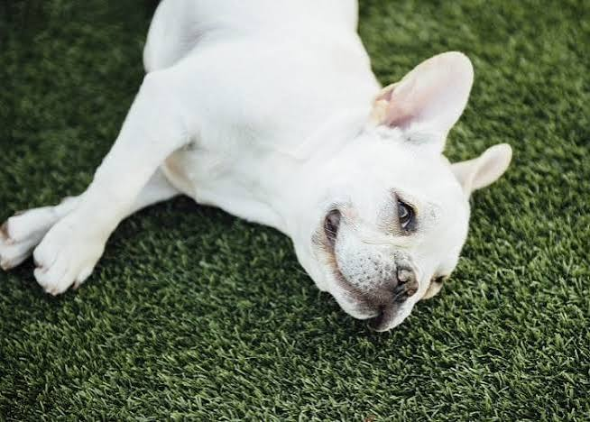

Our Grooming Services
At Paws & Polish Dog Grooming, we offer a variety of professional grooming services designed to keep your dog clean, comfortable and looking their best.
Our services are suitable for different breeds and sizes of dogs. We always aim to provide gentle and caring treatment during every grooming session.
Find a Grooming Service
Bath & Brush

Our Bath & Brush service includes a gentle bath, shampoo and thorough brushing to help keep your dog's coat clean, fresh and healthy.
Full Grooming

Our Full Grooming service includes bathing, brushing, coat trimming and finishing touches to give your dog a fresh and well-groomed appearance.
Nail Trimming

Regular nail trimming helps keep your dog's paws comfortable and helps maintain healthy nails.
Ear Cleaning

Our ear cleaning service helps keep your dog's ears clean and comfortable as part of their regular grooming routine.
De-shedding

Our de-shedding service helps remove loose fur and supports a cleaner and healthier-looking coat.
Our Service Prices
| Service | Small Dog | Medium Dog | Large Dog |
|---|---|---|---|
| Bath & Brush | R150 | R200 | R250 |
| Full Grooming | R250 | R300 | R350 |
| Nail Trimming | R80 | R100 | R120 |
| Ear Cleaning | R70 | R90 | R110 |
| De-shedding | R180 | R230 | R280 |
Important Information
- Prices may vary depending on the dog's coat and grooming requirements.
- Dogs should be clean and free from any serious health concerns before grooming.
- Please inform us of any special requirements when making a booking.
- Appointments are recommended to avoid waiting times.
Ready to Book?
Give your furry friend the grooming experience they deserve!
Frequently Asked Questions
How long does dog grooming take?
Grooming time depends on your dog's breed, size, coat condition and selected service.
Do I need to book an appointment?
Yes, we recommend booking in advance to secure your preferred appointment time.
What grooming services do you offer?
We offer Bath & Brush, Full Grooming, Nail Trimming and other grooming services.
Can I book online?
Yes! Visit our booking page to request an appointment for your dog.